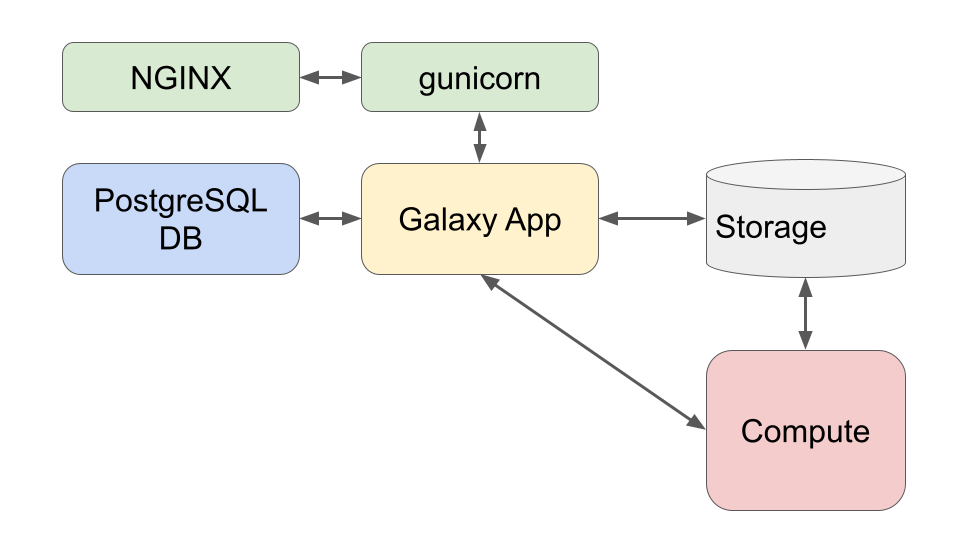

We updated the tutorials ahead of GCC, preparing for the GCC Galaxy Admin Training. However, 22.05 is not yet released and we still have some bugs in the roles to work our, so, until that time we recommend you follow the GTN Training Archive materials for this tutorial (and all others in this series.)
This tutorial assumes you have some familiarity with Ansible and are comfortable with writing and running playbooks. Here we’ll see how to install a Galaxy server using an Ansible playbook. The Galaxy Project has decided on Ansible for all of its deployment recipes. For our project, Ansible is even more fitting due to its name:
An ansible is a category of fictional device or technology capable of instantaneous or faster-than-light communication. It can send and receive messages to and from a corresponding device over any distance or obstacle whatsoever with no delay, even between star systems (Source: Wikipedia)
We want to give you a comprehensive understanding of how the Galaxy installation occurs, but we want to avoid you having to write a “custom” Galaxy installation playbook which you would eventually throw away, in order to use the official playbooks. Given these goals, we will go through the playbook in depth first, and then move to a hands-on portion later. If you are not interested in the inner workings, you can skip to that section now.
The yearly Galaxy Admin Training follows a specific ordering of tutorials. Use this timeline to help keep track of where you are in Galaxy Admin Training.
These Ansible roles and training materials were last tested on Centos 7 and Ubuntu 18.04, but will probably work on other RHEL and Debian variants.
The roles that are used in these training are currently used by usegalaxy.*, and other, servers in maintaining their infrastructure. (US, EU, both are running CentOS 7)
If you have an issue running these trainings on your OS flavour, please report the issue in the training material and we can see if it is possible to solve.
The official role is extremely configurable, everything that you want to change is exposed as a variable, and then tasks will change behaviour based on that. The role documentation is the most up-to-date source of documentation for the variables. You should take a minute and read over the variables listed there.
The important variables for this tutorial are:
galaxy_root
galaxy_commit_id
galaxy_config
galaxy_server_dir (automatically set based on galaxy_root)
These are largely self explanatory: a directory for all of Galaxy’s code and configuration, which commit should be installed, and the Galaxy configuration. We will not explain Galaxy configuration variables in detail as they are covered sufficiently in the galaxy.yml sample file or the online documentation.
The official recommendation is that you should have a variables file such as a group_vars/galaxyservers.yml for storing all of the Galaxy configuration.
The actions each set of tasks performs are described below.
Cloning Galaxy
The clone task is the one which is primarily interesting to us, it downloads Galaxy, using git, at a specific commit (or more generally, any git reference).
Ansible tries to update Galaxy, cloning it if it is missing, or otherwise attempting to update to the correct commit (or latest commit of the given branch).
Any change is reported.
The virtualenv is set up:
An empty virtualenv is created.
Pip is updated within the virtualenv.
Any .pyc files are removed, as this can occasionally result in Python loading the cached code, even if the corresponding .py file is no longer present at the checked-out commit. For safety, all of these are removed.
With that Galaxy is cloned to disk and is ready to be configured by the next task.
The directories for Galaxy configuration data and for the shed tools are created
Any config files are copied over
Any templates are copied over
The galaxy.yml (or .ini) is deployed
The setup for deploying extra Galaxy configuration templates and files is a little bit non-standard by Ansible best practices. Here you are expected to provide your own templates and static config files, and then describe them as a list of files and where they should be deployed to.
Using the UseGalaxy.eu configuration as an example, we have something like:
So the references in galaxy_config_templates to galaxy_config are done to ensure that the setting for e.g. “location of the datatypes config file” is the same between where we have configured Galaxy to looking for it, and where the file has been deployed, without requiring us to make variables changes in numerous places.
Using variables, either by defining them ahead of time, or simply accessing them via existing data structures that have been defined, e.g.:
# defining a variable that gets reused is great! galaxy_user:galaxy
galaxy_config: galaxy: # Re-using the galaxy_config_dir variable saves time and ensures everything # is in sync! datatypes_config_file:"/datatypes_conf.xml"
Practices like those shown above help to avoid problems caused when paths are defined differently in multiple places. The datatypes config file will be copied to the same path as Galaxy is configured to find it in, because that path is only defined in one place. Everything else is a reference to the original definition! If you ever need to update that definition, everything else will be updated accordingly.
Dependencies
Now that Galaxy is available on disk, Ansible is ready to start processing dependencies of Galaxy.
The virtualenv is updated with data from the galaxy_requirements_file, by default pointing to the requirements file in the codebase: {{ galaxy_server_dir }}/lib/galaxy/dependencies/pinned-requirements.txt.
This task creates a directory and initializes “mutable” (written/managed by Galaxy itself) configuration files. It also deploys any hand-managed mutable config files, but it is unlikely that you want to manage these directly, as Galaxy does a sufficient job. Any changes you make to Galaxy, for example installing some tools, would result in the tools being “forgotten about”, if you re-ran the playbook and overwrote the shed_tool_conf.xml mutable config file with a hand-managed one.
Managing the Database
The database management tasks are extremely convenient; any time you run the playbook to update Galaxy, this will automatically run the database schema migration as needed.
Galaxy first obtains the current DB version and the maximum possible DB version based on the codebase.
If needed, the database is created.
Both numbers are reported for the runner of the playbook.
If the numbers are different, then Ansible runs the command to upgrade the database to the latest version.
As an administrator who often forgot to run the upgrade, and would only notice it once Galaxy crashed during startup, having this process completely automated is extremely nice.
Building the Client
Galaxy is a modern web application that includes both a server (written in Python) and a client (written in Javascript). After the server is installed and its database prepared, the next step is to build the client application. This means fetching its dependencies, bundling components, creating minified copies of static content, etc. This process ensures that the smallest possible amount of data is transferred to the user when accessing Galaxy over the web, which is important for the performance of the website.
This process can be lengthy and resource intensive. Future plans for Galaxy include pre-building the client so that the build process is not necessary as long as you run “release” versions of Galaxy.
The client lives in the Galaxy code under the client/ directory, and the build process deploys it to the static/ directory, which we will configure a webserver to serve in this tutorial.
Handlers
A number of the tasks that are executed will trigger a restart of Galaxy. Currently the only auto-magic implementation of this restart handler is when Galaxy is started and run using systemd. Thankfully, this tutorial uses systemd, but if systemd is not an option wherever you’re deploying Galaxy, you will have to do something custom that fits for your setup. If this is the case for you, the role provides a way to reference your own handler by setting galaxy_restart_handler_name.
Defaults
As with other roles, numerous default values are provided, but these are useful mostly as reference, and not to go through individually.
Summary
Installation of Galaxy with the playbook follows generally the steps you would expect:
Galaxy is cloned (or updated)
A virtualenv is created if it doesn’t exist
Configuration files are installed
Any missing dependencies are installed
Any database updates are applied
The client application is built and deployed
It would not be difficult to write a role that does this yourself, but by using
the galaxyproject.galaxy role, you know that you’re getting all of the Galaxy
best practices and knowledge from previous admins codified for you.
Installing Galaxy
With the necessary background in place, you are ready to install Galaxy with Ansible. The playbooks will start simple, and grow over time. We will start with the minimal Galaxy playbook which only requires setting the galaxy_root and expand from there. First, however, we need a database for Galaxy to connect to, so we will do that now.
To proceed from here it is expected that:
Comment: Requirements for Running This Tutorial
You have Ansible installed on the machine where you will install Galaxy
Comment: Running Ansible on remote machine
It is possible to have Ansible installed on your laptop/local machine and run it against some remote hosts as well. We will not do that in this training.
Your ansible version is >=2.10, you can check this by running ansible --version
You have an inventory file with the VM or host specified where you will deploy Galaxy. We will refer to this group of hosts as “galaxyservers.”
Your VM has a public DNS name: this tutorial sets up SSL certificates from the start and as an integral part of the tutorial.
Your VM has python3 installed.
If you follow the official Ansible instructions to install Ansible on a blank machine, you will probably end up with py2 installed. You will need to install python3 in addition.
In your inventory file, you have written the full DNS hostname that has been provided, and notlocalhost, as we will be requesting SSL certificates.
You have the following ports exposed:
22 for SSH, this can be a different port or via VPN or similar.
80 for HTTP, this needs to be available to the world if you want to follow the LetsEncrypt portion of the tutorial.
443 for HTTPs, this needs to be available to the world if you want to follow the LetsEncrypt portion of the tutorial.
5671 for AMQP for Pulsar, needed if you plan to setup Pulsar for remote job running.
Comment: Ubuntu or Debian, CentOS or RHEL?
The training tutorial is only tested on Ubuntu, as that is the training platform most often used. The training should work on RHEL/CentOS, and the roles we use are definitely compatible with both. If any of the variable values differ between Ubuntu and CentOS, we try to note it in the tutorial. Any places we don’t note it are bugs.
There are known issues with CentOS7 and python3, which is used in this tutorial. If you use this setup, you should have python2 and python3 coexisting, and use python2 for Ansible (i.e. do not set interpreter_python in your ansible.cfg) and python3 for Galaxy. This setup requires numerous changes that you will need to discover, which are not covered in this tutorial.
Both python-psycopg2 and python3-psycopg2 need to be installed.
CentOS8 (and RHEL in general) have significantly different package names for some modules, beware!
Warning: 22.05 not yet released
We updated the tutorials ahead of GCC, preparing for the GCC Galaxy Admin Training. However, 22.05 is not yet released and we still have some bugs in the roles to work our, so, until that time we recommend you follow the GTN Training Archive materials for this tutorial (and all others in this series.)
Requirements
We have codified all of the dependencies you will need into a YAML file that ansible-galaxy can install.
Hands-on: Installing roles
Create a new directory galaxy in your home folder, and cd into that directory
Create a new file in your working directory called requirements.yml and include the following contents:
If you haven’t worked with diffs before, this can be something quite new or different.
If we have two files, let’s say a grocery list, in two files. We’ll call them ‘a’ and ‘b’.
Input: Old
$ cat old 🍎 🍐 🍊 🍋 🍒 🥑
Output: New
$ cat new 🍎 🍐 🍊 🍋 🍍 🥑
We can see that they have some different entries. We’ve removed 🍒 because they’re awful, and replaced them with an 🍍
Diff lets us compare these files
$ diff old new 5c5 < 🍒 --- > 🍍
Here we see that 🍒 is only in a, and 🍍 is only in b. But otherwise the files are identical.
There are a couple different formats to diffs, one is the ‘unified diff’
$ diff -U2 old new --- old 2022-02-16 14:06:19.697132568 +0100 +++ new 2022-02-16 14:06:36.340962616 +0100 @@ -3,4 +3,4 @@ 🍊 🍋 -🍒 +🍍 🥑
This is basically what you see in the training materials which gives you a lot of context about the changes:
--- old is the ‘old’ file in our view
+++ new is the ‘new’ file
@@ these lines tell us where the change occurs and how many lines are added or removed.
Lines starting with a - are removed from our ‘new’ file
Lines with a + have been added.
So when you go to apply these diffs to your files in the training:
Ignore the header
Remove lines starting with - from your file
Add lines starting with + to your file
The other lines (🍊/🍋 and 🥑) above just provide “context”, they help you know where a change belongs in a file, but should not be edited when you’re making the above change. Given the above diff, you would find a line with a 🍒, and replace it with a 🍍
Added & Removed Lines
Removals are very easy to spot, we just have removed lines
--- old 2022-02-16 14:06:19.697132568 +0100 +++ new 2022-02-16 14:10:14.370722802 +0100 @@ -4,3 +4,2 @@ 🍋 🍒 -🥑
And additions likewise are very easy, just add a new line, between the other lines in your file.
--- old 2022-02-16 14:06:19.697132568 +0100 +++ new 2022-02-16 14:11:11.422135393 +0100 @@ -1,3 +1,4 @@ 🍎 +🍍 🍐 🍊
Completely new files
Completely new files look a bit different, there the “old” file is /dev/null, the empty file in a Linux machine.
We’ll cover it in more detail as we use each of the roles but briefly:
Role
Purpose
galaxyproject.galaxy
Installs and configures the Galaxy application
galaxyproject.nginx
Sets up a webserver
galaxyproject.postgresql
Installs our database, PostgreSQL
galaxyproject.postgresql_objects
Creates users and databases within PostgreSQL
geerlingguy.pip
Ensures that pip is available
uchida.miniconda
Installs miniconda, which is used by Galaxy
usegalaxy_eu.certbot
Installs certbot and requests SSL certificates
Q: Is there a correspondence between galaxy role versions and galaxy versions?
A: They are correlated (because generally new Galaxy versions could introduce e.g. new configuration options that the galaxy role would then need to adopt), but the Galaxy role can install older versions of Galaxy.
This will install all of the required modules for this training into the roles/ folder. We choose to install to a folder to give you easy access to look through the different roles when you have questions on their behaviour.
If you’re using git, it can make sense to tell git to ignore the roles
directory, as all of that data can be perfectly recreated from our
variables in the requirements.yml file.
Simply create a file .gitignore with the following content:
roles/
.vault-password.txt
When you run git status you’ll notice that the roles/ folder is not listed among the other “Untracked files”. We’re adding the .vault-password.txt file as well, ahead of time, because this should never ever be committed to the repository.
Now you can do git add . to add all of the files in the current directory, and not worry about committing generated artifacts!
Inspect the contents of the newly created roles directory in your working directory.
Hands-on: Configuration files
Create a ansible.cfg file (next to your playbook) to configure settings like the inventory file (and save ourselves some typing!), or the Python interpreter to use:
--- /dev/null
+++ b/ansible.cfg
@@ -0,0 +1,6 @@+[defaults]
+interpreter_python = /usr/bin/python3
+inventory = hosts
+retry_files_enabled = false
+stdout_callback = yaml # Use the YAML callback plugin.
+bin_ansible_callbacks = True # Use the stdout_callback when running ad-hoc commands.
As mentioned in the “Ubuntu or Debian, CentOS or RHEL?” comment above, if you are using CentOS7 do not set interpreter_python in ansible.cfg .
There is an additional useful option that you might want to add to your ansible.cfg file if you are connecting over SSH:
[ssh_connection]pipelining=true
Pipelining will make Ansible run faster by significantly reducing the number of new SSH connections that must be opened.
Create the hosts inventory file if you have not done so yet, defining a [galaxyservers] group with the address of the host where you want to install Galaxy. If you are running Ansible on the same machine where Galaxy will be installed to, you should set the ansible_connection=local variable. Lastly, you should explicitly set the ansible_user variable to the username to use when connecting to the server. Ansible has changed its behaviour over time regarding whether or not ansible_user is defined, and it is most effective to define it explicitly even when it can sometimes be inferred.
Galaxy is capable of talking to multiple databases through SQLAlchemy drivers. SQLite is the development database, but PostgreSQL (/ˈpoʊstɡrɛs ˌkjuː ˈɛl/, POHST-gres kyoo el) is recommended in production. MySQL is a possibility, but does not receive the same testing or bugfixes from the main development team as PostgreSQL, so we will only show installation with PostgreSQL.
PostgreSQL maintains its own user database apart from the system user database. By default, PostgreSQL uses the “peer” authentication method which allows access for system users with matching PostgreSQL usernames (other authentication mechanisms are available, see the PostgreSQL Client Authentication documentation.
For this tutorial, we will use the default “peer” authentication, so we need to create a PostgreSQL user matching the system user under which Galaxy will be running, i.e. galaxy. This is normally done with the PostgreSQL createuser command, and it must be run as the postgres user. In our case, we will use the galaxyproject.postgresql_objects role to handle this step. Additionally we’re setting a couple of variables to control the automatic backups, they’ll be placed in the /data/backups folder next to our user uploaded Galaxy data.
Hands-on: Installing PostgreSQL
Create and edit group_vars/galaxyservers.yml and add some variables to configure PostgreSQL:
To use postgres via another machine, or via the network, you can add lines like the following:
postgresql_pg_hba_conf:-host all all 127.0.0.1/32 md5
Here you should either add multiple lines per IP address that needs access to the Postgres server (with netmask /32), or a less specific IP range defined also via netmask.
Additionally you’ll need to change the postgresql_objects_users statement to include a password (maybe stored in a vault, discussed later!)
Create and open galaxy.yml which will be our playbook. Add the following:
Add a pre-task to install the necessary dependencies: python3-psycopg2, acl
A role for galaxyproject.postgresql. This will handle the installation of PostgreSQL.
A role for galaxyproject.postgresql_objects, run as the postgres user. (You will need become/become_user.) This role allows for managing users and databases within postgres.
The bare role name is just simplified syntax for the roles, you could equally specifiy role: <name> every time but it’s only necessary if you want to set additional variables like become_user
{ Y, true, Yes, ON } : Boolean true { n, FALSE, No, off } : Boolean false
Run the playbook:
Input: Bash
ansible-playbook galaxy.yml
Output: Bash
PLAY[galaxyservers]************************************************************************************TASK[Gathering Facts]**********************************************************************************ok:[gat-0.training.galaxyproject.eu]TASK[Install Dependencies]*****************************************************************************changed:[gat-0.training.galaxyproject.eu]TASK[galaxyproject.postgresql : include_tasks]*********************************************************included:/home/ubuntu/galaxy/roles/galaxyproject.postgresql/tasks/debian.ymlforgat-0.training.galaxyproject.euTASK[galaxyproject.postgresql : Install pgdg package signing key (Debian/pgdg)]************************skipping:[gat-0.training.galaxyproject.eu]TASK[galaxyproject.postgresql : Install pgdg repository (Debian/pgdg)]*********************************skipping:[gat-0.training.galaxyproject.eu]TASK[galaxyproject.postgresql : Install PostgreSQL (Debian)]*******************************************changed:[gat-0.training.galaxyproject.eu]TASK[galaxyproject.postgresql : Get installed version]*************************************************ok:[gat-0.training.galaxyproject.eu]TASK[galaxyproject.postgresql : Set version fact]******************************************************ok:[gat-0.training.galaxyproject.eu]TASK[galaxyproject.postgresql : Set version fact]******************************************************skipping:[gat-0.training.galaxyproject.eu]TASK[galaxyproject.postgresql : Set OS-specific variables]*********************************************ok:[gat-0.training.galaxyproject.eu]TASK[galaxyproject.postgresql : Set pgdata fact]*******************************************************ok:[gat-0.training.galaxyproject.eu]TASK[galaxyproject.postgresql : Set conf dir fact]*****************************************************ok:[gat-0.training.galaxyproject.eu]TASK[galaxyproject.postgresql : include_tasks]*********************************************************skipping:[gat-0.training.galaxyproject.eu]TASK[galaxyproject.postgresql : Create conf.d]*********************************************************ok:[gat-0.training.galaxyproject.eu]TASK[galaxyproject.postgresql : Check for conf.d include in postgresql.conf]***************************ok:[gat-0.training.galaxyproject.eu]TASK[galaxyproject.postgresql : Set conf.d include in postgresql.conf]*********************************skipping:[gat-0.training.galaxyproject.eu]TASK[galaxyproject.postgresql : Include 25ansible_postgresql.conf in postgresql.conf]******************skipping:[gat-0.training.galaxyproject.eu]TASK[galaxyproject.postgresql : Set config options]****************************************************changed:[gat-0.training.galaxyproject.eu]TASK[galaxyproject.postgresql : Install pg_hba.conf]***************************************************changed:[gat-0.training.galaxyproject.eu]TASK[galaxyproject.postgresql : include_tasks]*********************************************************skipping:[gat-0.training.galaxyproject.eu]TASK[galaxyproject.postgresql : Ensure PostgreSQL is running]******************************************ok:[gat-0.training.galaxyproject.eu]TASK[galaxyproject.postgresql_objects : Revoke extra privileges]*********************************************TASK[galaxyproject.postgresql_objects : Drop databases]******************************************************skipping:[gat-0.training.galaxyproject.eu]=>(item={'name': 'galaxy', 'owner': 'galaxy'})TASK[galaxyproject.postgresql_objects : Create and drop users]***********************************************changed:[gat-0.training.galaxyproject.eu]=>(item={'name': 'galaxy'})[WARNING]:Moduledidnotsetno_logforno_password_changesTASK[galaxyproject.postgresql_objects : Create groups]*******************************************************TASK[galaxyproject.postgresql_objects : Add or remove users from groups]*************************************TASK[galaxyproject.postgresql_objects : Drop groups]*********************************************************TASK[galaxyproject.postgresql_objects : Create databases]****************************************************changed:[gat-0.training.galaxyproject.eu]=>(item={'name': 'galaxy', 'owner': 'galaxy'})TASK[galaxyproject.postgresql_objects : Grant user database privileges]**************************************skipping:[gat-0.training.galaxyproject.eu]=>(item={'name': 'galaxy'})TASK[galaxyproject.postgresql_objects : Grant extra privileges]**********************************************RUNNINGHANDLER[galaxyproject.postgresql : Reload PostgreSQL]******************************************changed:[gat-0.training.galaxyproject.eu]PLAYRECAP**********************************************************************************************gat-0.training.galaxyproject.eu:ok=17 changed=7 unreachable=0 failed=0 skipped=14 rescued=0 ignored=0
Comment: Error: `postgresql_version is version_compare('9.3', '>=')' failed`
You might see an error like this, if you’re running with --check mode. Unfortunately here --check mode meets real life: not all modules support it because some rely on running command line tools to obtain version numbers, something that cannot be mocked with check mode. You can solve this by running it without --check.
fatal: [gat-34.us.galaxy.training]: FAILED! => {"msg": "The conditional check 'postgresql_version is version_compare('9.3', '>=')' failed. The error was: Input version value cannot be empty\n\nThe error appears to be in '/home/ubuntu/galaxy/roles/galaxyproject.postgresql/tasks/main.yml': line 42, column 3, but may\nbe elsewhere in the file depending on the exact syntax problem.\n\nThe offending line appears to be:\n\n# etc.). So check for a match first and then add if there's no match.\n- name: Check for conf.d include in postgresql.conf\n ^ here\n"}
Comment: When running Ansible
Always pay close attention to tasks reported as changed and ensure that the changes were expected!
In our ansible.cfg file we specified the inventory was stored in a file called hosts:
There can be multiple reasons this happens, so we’ll step through all of them. We’ll start by assuming you’re running the command
ansible-playbook galaxy.yml
The following things can cause issues:
Within your galaxy.yml, you’ve referred to a host group that doesn’t exist or is misspelled. Check the hosts: galaxyservers to ensure it matches the host group defined in the hosts file.
Vice-versa, the group in your hosts file should match the hosts selected in the playbook, galaxy.yml.
If neither of these are the issue, it’s possible Ansible doesn’t know to check the hosts file for the inventory. Make sure you’ve specified inventory = hosts in your ansible.cfg.
Inspect the changes that have been made on your Galaxy server. Places to look include:
/etc/postgresql
Databases and users in PostgreSQL.
Input: Bash
List available databases. You can now login and access the database, but only as the postgres user. You will need to sudo -iu postgres first, and then you can run psql galaxy.
The database will currently be empty (check relations with \d and list of roles with \dg) as Galaxy has not yet connected to it. Once you install Galaxy in the next step, the database will be populated. (Quit database with \q)
psql(10.12(Ubuntu10.12-0ubuntu0.18.04.1))Type"help"forhelp.postgres=# \d
Did not find any relations.postgres=# \dg
List of rolesRolename|Attributes|Memberof-----------+------------------------------------------------------------+-----------galaxy||{}postgres|Superuser,Createrole,CreateDB,Replication,BypassRLS|{}postgres=# \q
Next we will dive right in to deploying a copy of Galaxy onto our server, but it will just be a static copy of the code without anything running.
For a normal Galaxy instance there are a few configuration changes you make very early during deployment:
Changing the database connection
Configuring the admin user list
Changing the “brand”
Additionally we’ll go ahead and set up the production-ready Gunicorn which will handle processing Galaxy jobs. Gunicorn launches as many workers as you request, and then they take turns placing a lock, accepting a job, releasing that lock, and then going on to process that job.
Finally, best admin practices are to not run Galaxy as a user with sudo access, like your login user probably has. Additionally, it is best to install the Galaxy code and configs as a separate user, for security purposes. So we will instruct the galaxyproject.galaxy role to create a new user account specifically to run Galaxy under.
Galaxy can be run in a couple of other configurations depending on your needs. Mules are generally a good solution for most production needs.
The configuration is quite simple thanks to the many sensible defaults that are provided in the Ansible roles.
Hands-on: Minimal Galaxy Playbook
Open galaxy.yml with your text editor and set the following:
Amend the package installation pre-task to install some additional necessary dependencies: bzip2, git, make, tar, and virtualenv.
Add the roles geerlingguy.pip, galaxyproject.galaxy and uchida.miniconda (in this order) at the end, with uchida.miniconda run as the galaxy user.
The Galaxy user is created to separate privileges. Then we add uchida.miniconda, which is run as the Galaxy user.
The miniconda role attempts to install tar and bzip2, even when the user doesn’t have permissions to do this. This issue has been addressed in the codebase, but, the role has not seen a release which would address this. You do not need to run this role, Galaxy will attempt to install conda when it is missing. We added it to prevent a possible race condition between the two mules if both attempt to install conda at the same time. So, remove the role from your playbook, and carry on, if you have issues.
Edit your group variables file for your group (group_vars/galaxyservers.yml).
We need to set the following variables at the top level:
Variable
Value
Purpose
galaxy_create_user
true
Instruct the role to create a Galaxy user
galaxy_separate_privileges
true
Enable separation mode to install the Galaxy code as root but run the Galaxy server as galaxy
galaxy_manage_paths
true
Instruct the role to create the needed directories.
galaxy_layout
root-dir
This enables the galaxy_root Galaxy deployment layout: all of the code, configuration, tools, and mutable-data (like caches, location files, etc.) folders will live by default beneath galaxy_root. User data is stored under file_path, a variable we will set later.
galaxy_root
/srv/galaxy
This is the root of the Galaxy deployment.
galaxy_user
{name: galaxy, shell: /bin/bash}
The user that Galaxy will run as.
galaxy_commit_id
release_22.05
The git reference to check out, which in this case is the branch for Galaxy Release 22.05
galaxy_force_checkout
true
If we make any modifications to the Galaxy codebase, they will be removed. This way we know we’re getting an unmodified Galaxy and no one has made any unexpected changes to the codebase.
miniconda_prefix
"{{ galaxy_tool_dependency_dir }}/_conda"
We will manually install conda as well. Normally Galaxy will attempt to auto-install this, but since we will set up a production-ready instance with multiple handlers, there is the chance that they can get stuck.
miniconda_version
4.7.12
Install a specific miniconda version, the latest one at the time of writing that was tested and working.
miniconda_manage_dependencies
false
Specify whether to install the miniconda installer dependencies.
In the time between this tutorial was last updated (), and when you are now reading it, one or more new releases of Galaxy may have occured.
If you wish to use a different version of Galaxy than the one listed, you can do so, but there is no guarantee this tutorial will work without modifications.
Consider updating the Galaxy Commit ID to the latest version of Galaxy available, this will probably give better results (given that dependencies are always updating) than using a potentially outdated version.
Again edit the group variables file and add a variable for galaxy_config. It will be a hash with one key, galaxy which will also be a hash. Inside here you can place all of your Galaxy configuration.
So the structure looks like:
galaxy_config:galaxy:key:value
Now you should set:
admin_users to the email address you will use with this Galaxy.
brand to something fun! (E.g. 🧬🔬🚀)
database_connection to point to the database you setup earlier (postgresql:///galaxy?host=/var/run/postgresql).
file_path to a place to store data, /data is fine for this lesson which sets up a single-node Galaxy. If you have separate compute machines, this will normally need to be storage shared between the Galaxy node and compute nodes.
check_migrate_tools must be set to false due to a new installation of Galaxy.
tool_data_path to {{ galaxy_mutable_data_dir }}/tool-data, so that when tools are installed, due to privilege separation, this will happen in a directory Galaxy can actually write into.
object_store_store_by to uuid, this is a better way of storing files that will ensure better filesystem balancing than the older system.
id_secret to {{ vault_id_secret }}, we’ll define this variable next but it will be used to encode the IDs used in Galaxy URLs and for securing session cookies.
Galaxy datasets cannot be separated by user or other attribute currently, but you can spread data unintelligently across 1 or more storage pools.
If you want to run your database on a different machine, you will need to change the connection string. In your hosts file, place the hostname of the machine you’re installing on. ansible_connection can be left off entirely and it will connect over ssh. You may need to set ansible_user to the username of the admin user (who can run sudo).
Here you’ll need to re-use the connection details you specified during postgresql_objects_users. You can reference it like the following, for example. localhost may need to change if you’re hosting the database on another host.
In this step we use some templated variables. These are seen in our group variables, among other places, and look like miniconda_prefix: "{{ galaxy_tool_dependency_dir }}/_conda".
When Ansible runs:
It collects variables defined in group variables and other places
The first task for each machine is the setup module which gathers facts about the host, which are added to the available variables
As roles are executed:
Their defaults are added to the set of variables (the group variables having precedence over these variables)
They can also dynamically define more variables which may not be set until that role is run
Before use (in templates, commands, etc.), variables are resolved to their final value
So it is not always easy to tell what variables will be set, or what their finaly value will be, without running the playbook. It is possible, but non trivial.
In order to enable the Gunicorn + Webless strategy, we need to edit the Gravity configuration of Galaxy. This has a default value, but we will have to override it. Add the following configuration as a child of the galaxy_config variable:
1workers: Controls the number of Galaxy application processes Gunicorn will spawn. Increased web performance can be attained by increasing this value. If Gunicorn is the only application on the server, a good starting value is the number of CPUs * 2 + 1. 4-12 workers should be able to handle hundreds if not thousands of requests per second.
2 extra_args: You can specify additional arguments to pass to gunicorn here.
Let’s set up our vault to store the secrets for these tutorials.
Input: Bash
openssl rand -base64 24 > .vault-password.txt
Tell Ansible where to find the decryption key. Edit your file ansible.cfg and add the vault_password_file variable.
--- a/ansible.cfg
+++ b/ansible.cfg
@@ -4,3 +4,4 @@ inventory = hosts
retry_files_enabled = false
stdout_callback = yaml # Use the YAML callback plugin.
bin_ansible_callbacks = True # Use the stdout_callback when running ad-hoc commands.
+vault_password_file = .vault-password.txt
Create the vault:
Input: Bash
ansible-vault create group_vars/secret.yml
This will open the editor. Within that file, define your vault_id_secret to be a long random value.
vault_id_secret: BxI6zlQVhoHLPVf3gqQ
You can use the same command we ran before: openssl rand -base64 24 to get a good, secure id_secret for your Galaxy
Your vault should probably look something like this, it’s safe to commit to GitHub (or another public Distributed Version Control System (DVCS)) now that you’ve got the secrets safely encrypted.
If you’re using git, and storing all of these steps in your git history,
you’ll find that working with Vault secrets can be rather annoying as
the opaque blobs are impossible to read. There’s a way to make this
much easier though:
Create a file .gitattributes with the following content:
You can add this file to your repository with git add .gitattributes
to ensure colleagues get a copy of the file too. Just be sure.vault-password.txt is listed in your .gitignore file!
If you have more vault secrets, you can adjust this line (or add more,
wildcards are supported) to list all of your secret files. This tells
git to use ansible-vault to diff the two files, as you can see in
the following real (redacted) snippet from a vault stored in a public
github project.
PLAY[galaxyservers]***************************************************************************TASK[Gathering Facts]*************************************************************************ok:[gat-0.training.galaxyproject.eu]TASK[Install Dependencies]********************************************************************ok:[gat-0.training.galaxyproject.eu]TASK[galaxyproject.postgresql : include_tasks]************************************************included:/home/ubuntu/galaxy/roles/galaxyproject.postgresql/tasks/debian.ymlforgat-0.training.galaxyproject.euTASK[galaxyproject.postgresql : Install pgdg package signing key (Debian/pgdg)]***************skipping:[gat-0.training.galaxyproject.eu]TASK[galaxyproject.postgresql : Install pgdg repository (Debian/pgdg)]************************skipping:[gat-0.training.galaxyproject.eu]TASK[galaxyproject.postgresql : Install PostgreSQL (Debian)]**********************************ok:[gat-0.training.galaxyproject.eu]TASK[galaxyproject.postgresql : Get installed version]****************************************ok:[gat-0.training.galaxyproject.eu]TASK[galaxyproject.postgresql : Set version fact]*********************************************ok:[gat-0.training.galaxyproject.eu]TASK[galaxyproject.postgresql : Set version fact]*********************************************skipping:[gat-0.training.galaxyproject.eu]TASK[galaxyproject.postgresql : Set OS-specific variables]************************************ok:[gat-0.training.galaxyproject.eu]TASK[galaxyproject.postgresql : Set pgdata fact]**********************************************ok:[gat-0.training.galaxyproject.eu]TASK[galaxyproject.postgresql : Set conf dir fact]********************************************ok:[gat-0.training.galaxyproject.eu]TASK[galaxyproject.postgresql : include_tasks]************************************************skipping:[gat-0.training.galaxyproject.eu]TASK[galaxyproject.postgresql : Create conf.d]************************************************ok:[gat-0.training.galaxyproject.eu]TASK[galaxyproject.postgresql : Check for conf.d include in postgresql.conf]******************ok:[gat-0.training.galaxyproject.eu]TASK[galaxyproject.postgresql : Set conf.d include in postgresql.conf]************************skipping:[gat-0.training.galaxyproject.eu]TASK[galaxyproject.postgresql : Include 25ansible_postgresql.conf in postgresql.conf]*********skipping:[gat-0.training.galaxyproject.eu]TASK[galaxyproject.postgresql : Set config options]*******************************************ok:[gat-0.training.galaxyproject.eu]TASK[galaxyproject.postgresql : Install pg_hba.conf]******************************************ok:[gat-0.training.galaxyproject.eu]TASK[galaxyproject.postgresql : include_tasks]************************************************skipping:[gat-0.training.galaxyproject.eu]TASK[galaxyproject.postgresql : Ensure PostgreSQL is running]*********************************ok:[gat-0.training.galaxyproject.eu]TASK[galaxyproject.postgresql_objects : Revoke extra privileges]************************************TASK[galaxyproject.postgresql_objects : Drop databases]*********************************************skipping:[gat-0.training.galaxyproject.eu]=>(item={'name': 'galaxy', 'owner': 'galaxy'})TASK[galaxyproject.postgresql_objects : Create and drop users]**************************************ok:[gat-0.training.galaxyproject.eu]=>(item={'name': 'galaxy'})[WARNING]:Moduledidnotsetno_logforno_password_changesTASK[galaxyproject.postgresql_objects : Create groups]**********************************************TASK[galaxyproject.postgresql_objects : Add or remove users from groups]****************************TASK[galaxyproject.postgresql_objects : Drop groups]************************************************TASK[galaxyproject.postgresql_objects : Create databases]*******************************************ok:[gat-0.training.galaxyproject.eu]=>(item={'name': 'galaxy', 'owner': 'galaxy'})TASK[galaxyproject.postgresql_objects : Grant user database privileges]*****************************skipping:[gat-0.training.galaxyproject.eu]=>(item={'name': 'galaxy'})TASK[galaxyproject.postgresql_objects : Grant extra privileges]*************************************TASK[geerlingguy.pip : Ensure Pip is installed.]**********************************************ok:[gat-0.training.galaxyproject.eu]TASK[geerlingguy.pip : Ensure pip_install_packages are installed.]****************************TASK[galaxyproject.galaxy : Ensure that mutually exclusive options are not set]***************ok:[gat-0.training.galaxyproject.eu]=>{"changed":false,"msg":"Allassertionspassed"}TASK[galaxyproject.galaxy : Set privilege separation default variables]***********************ok:[gat-0.training.galaxyproject.eu]TASK[galaxyproject.galaxy : Include layout vars]**********************************************ok:[gat-0.training.galaxyproject.eu]TASK[galaxyproject.galaxy : Set any unset variables from layout defaults]*********************ok:[gat-0.training.galaxyproject.eu]=>(item=galaxy_venv_dir)ok:[gat-0.training.galaxyproject.eu]=>(item=galaxy_server_dir)ok:[gat-0.training.galaxyproject.eu]=>(item=galaxy_config_dir)ok:[gat-0.training.galaxyproject.eu]=>(item=galaxy_mutable_data_dir)ok:[gat-0.training.galaxyproject.eu]=>(item=galaxy_mutable_config_dir)ok:[gat-0.training.galaxyproject.eu]=>(item=galaxy_shed_tools_dir)ok:[gat-0.training.galaxyproject.eu]=>(item=galaxy_cache_dir)ok:[gat-0.training.galaxyproject.eu]=>(item=galaxy_local_tools_dir)TASK[galaxyproject.galaxy : Check that any explicitly set Galaxy config options match the values of explicitly set variables]***skipping:[gat-0.training.galaxyproject.eu]=>(item=tool_dependency_dir)skipping:[gat-0.training.galaxyproject.eu]=>(item=file_path)skipping:[gat-0.training.galaxyproject.eu]=>(item=job_working_directory)skipping:[gat-0.training.galaxyproject.eu]=>(item=shed_tool_config_file)TASK[galaxyproject.galaxy : Set any unset variables corresponding to Galaxy config options from galaxy_config or layout defaults]***ok:[gat-0.training.galaxyproject.eu]=>(item=tool_dependency_dir)ok:[gat-0.training.galaxyproject.eu]=>(item=file_path)ok:[gat-0.training.galaxyproject.eu]=>(item=job_working_directory)TASK[galaxyproject.galaxy : Include user creation tasks]**************************************included:/home/ubuntu/galaxy/roles/galaxyproject.galaxy/tasks/user.ymlforgat-0.training.galaxyproject.euTASK[galaxyproject.galaxy : Create Galaxy group]**********************************************skipping:[gat-0.training.galaxyproject.eu]TASK[galaxyproject.galaxy : Create Galaxy user]***********************************************changed:[gat-0.training.galaxyproject.eu]TASK[galaxyproject.galaxy : Create Galaxy privilege separation user]**************************skipping:[gat-0.training.galaxyproject.eu]TASK[galaxyproject.galaxy : Include path management tasks]************************************included:/home/ubuntu/galaxy/roles/galaxyproject.galaxy/tasks/paths.ymlforgat-0.training.galaxyproject.euTASK[galaxyproject.galaxy : Get group IDs for Galaxy users]***********************************ok:[gat-0.training.galaxyproject.eu]=>(item=galaxy)ok:[gat-0.training.galaxyproject.eu]=>(item=root)TASK[galaxyproject.galaxy : Get group names for Galaxy users]*********************************ok:[gat-0.training.galaxyproject.eu]=>(item=galaxy)ok:[gat-0.training.galaxyproject.eu]=>(item=root)TASK[galaxyproject.galaxy : Set Galaxy user facts]********************************************ok:[gat-0.training.galaxyproject.eu]TASK[galaxyproject.galaxy : Determine whether to restrict to group permissions]***************ok:[gat-0.training.galaxyproject.eu]TASK[galaxyproject.galaxy : Create galaxy_root]***********************************************changed:[gat-0.training.galaxyproject.eu]TASK[galaxyproject.galaxy : Create additional privilege separated directories]****************changed:[gat-0.training.galaxyproject.eu]=>(item=/srv/galaxy/venv)changed:[gat-0.training.galaxyproject.eu]=>(item=/srv/galaxy/server)changed:[gat-0.training.galaxyproject.eu]=>(item=/srv/galaxy/config)changed:[gat-0.training.galaxyproject.eu]=>(item=/srv/galaxy/local_tools)TASK[galaxyproject.galaxy : Create additional directories]************************************changed:[gat-0.training.galaxyproject.eu]=>(item=/srv/galaxy/var)changed:[gat-0.training.galaxyproject.eu]=>(item=/srv/galaxy/var/config)changed:[gat-0.training.galaxyproject.eu]=>(item=/srv/galaxy/var/cache)changed:[gat-0.training.galaxyproject.eu]=>(item=/srv/galaxy/var/shed_tools)changed:[gat-0.training.galaxyproject.eu]=>(item=/srv/galaxy/var/dependencies)changed:[gat-0.training.galaxyproject.eu]=>(item=/data)changed:[gat-0.training.galaxyproject.eu]=>(item=/srv/galaxy/jobs)TASK[galaxyproject.galaxy : Include clone tasks]**********************************************included:/home/ubuntu/galaxy/roles/galaxyproject.galaxy/tasks/clone.ymlforgat-0.training.galaxyproject.euTASK[galaxyproject.galaxy : Update Galaxy to specified ref]***********************************changed:[gat-0.training.galaxyproject.eu]TASK[galaxyproject.galaxy : Report Galaxy version change]*************************************changed:[gat-0.training.galaxyproject.eu]=>{"msg":"Galaxyversionchangedfrom''to'e75a792fc631ff216de6664d399f6bbe371086cd'"}TASK[galaxyproject.galaxy : Create Galaxy virtualenv]*****************************************changed:[gat-0.training.galaxyproject.eu]TASK[galaxyproject.galaxy : Ensure pip is the latest release]*********************************ok:[gat-0.training.galaxyproject.eu]TASK[galaxyproject.galaxy : Remove orphaned .pyc files and compile bytecode]******************changed:[gat-0.training.galaxyproject.eu]TASK[galaxyproject.galaxy : Include download tasks]*******************************************skipping:[gat-0.training.galaxyproject.eu]TASK[galaxyproject.galaxy : Include static config setup tasks]********************************included:/home/ubuntu/galaxy/roles/galaxyproject.galaxy/tasks/static_setup.ymlforgat-0.training.galaxyproject.euTASK[galaxyproject.galaxy : Ensure Galaxy version is set]*************************************included:/home/ubuntu/galaxy/roles/galaxyproject.galaxy/tasks/_inc_galaxy_version.ymlforgat-0.training.galaxyproject.euTASK[galaxyproject.galaxy : Collect Galaxy version file]**************************************ok:[gat-0.training.galaxyproject.eu]TASK[galaxyproject.galaxy : Determine Galaxy version]*****************************************ok:[gat-0.training.galaxyproject.eu]TASK[galaxyproject.galaxy : Install additional Galaxy config files (static)]******************TASK[galaxyproject.galaxy : Install additional Galaxy config files (template)]****************TASK[galaxyproject.galaxy : Install local tools]**********************************************TASK[galaxyproject.galaxy : Install local_tool_conf.xml]**************************************skipping:[gat-0.training.galaxyproject.eu]TASK[galaxyproject.galaxy : Append local_tool_conf.xml to tool_config_file Galaxy config option]***skipping:[gat-0.training.galaxyproject.eu]TASK[galaxyproject.galaxy : Append shed_tool_conf.xml to tool_config_file Galaxy config option]***skipping:[gat-0.training.galaxyproject.eu]TASK[galaxyproject.galaxy : Ensure dynamic job rules paths exists]****************************TASK[galaxyproject.galaxy : Install dynamic job rules]****************************************TASK[galaxyproject.galaxy : Ensure dynamic rule __init__.py's exist]**************************TASK[galaxyproject.galaxy : Create Galaxy configuration file]*********************************changed:[gat-0.training.galaxyproject.eu]TASK[galaxyproject.galaxy : Include dependency setup tasks]***********************************included:/home/ubuntu/galaxy/roles/galaxyproject.galaxy/tasks/dependencies.ymlforgat-0.training.galaxyproject.euTASK[galaxyproject.galaxy : Create Galaxy virtualenv]*****************************************ok:[gat-0.training.galaxyproject.eu]TASK[galaxyproject.galaxy : Ensure pip is the latest release]*********************************ok:[gat-0.training.galaxyproject.eu]TASK[galaxyproject.galaxy : Install Galaxy base dependencies]*********************************changed:[gat-0.training.galaxyproject.eu]TASK[galaxyproject.galaxy : Collect Galaxy conditional dependency requirement strings]********ok:[gat-0.training.galaxyproject.eu]TASK[galaxyproject.galaxy : Install Galaxy conditional dependencies]**************************changed:[gat-0.training.galaxyproject.eu]TASK[galaxyproject.galaxy : Include mutable config setup tasks]*******************************included:/home/ubuntu/galaxy/roles/galaxyproject.galaxy/tasks/mutable_setup.ymlforgat-0.training.galaxyproject.euTASK[galaxyproject.galaxy : Ensure Galaxy version is set]*************************************skipping:[gat-0.training.galaxyproject.eu]TASK[galaxyproject.galaxy : Instantiate mutable configuration files]**************************changed:[gat-0.training.galaxyproject.eu]=>(item={'src': 'shed_data_manager_conf.xml', 'dest': '/srv/galaxy/var/config/shed_data_manager_conf.xml'})changed:[gat-0.training.galaxyproject.eu]=>(item={'src': 'shed_tool_data_table_conf.xml', 'dest': '/srv/galaxy/var/config/shed_tool_data_table_conf.xml'})TASK[galaxyproject.galaxy : Instantiate mutable configuration templates]**********************changed:[gat-0.training.galaxyproject.eu]=>(item={'src': 'shed_tool_conf.xml.j2', 'dest': '/srv/galaxy/var/config/migrated_tools_conf.xml'})changed:[gat-0.training.galaxyproject.eu]=>(item={'src': 'shed_tool_conf.xml.j2', 'dest': '/srv/galaxy/var/config/shed_tool_conf.xml'})TASK[galaxyproject.galaxy : Include database management tasks]********************************included:/home/ubuntu/galaxy/roles/galaxyproject.galaxy/tasks/database.ymlforgat-0.training.galaxyproject.euTASK[galaxyproject.galaxy : Get current Galaxy DB version]************************************ok:[gat-0.training.galaxyproject.eu]TASK[galaxyproject.galaxy : Get maximum Galaxy DB version]************************************ok:[gat-0.training.galaxyproject.eu]TASK[galaxyproject.galaxy : Report current and max Galaxy database]***************************skipping:[gat-0.training.galaxyproject.eu]TASK[galaxyproject.galaxy : Upgrade Galaxy DB]************************************************skipping:[gat-0.training.galaxyproject.eu]TASK[galaxyproject.galaxy : Include client build tasks]***************************************included:/home/ubuntu/galaxy/roles/galaxyproject.galaxy/tasks/client.ymlforgat-0.training.galaxyproject.euTASK[galaxyproject.galaxy : Ensure client_build_hash.txt exists]******************************changed:[gat-0.training.galaxyproject.eu]TASK[galaxyproject.galaxy : Get current client commit id]*************************************ok:[gat-0.training.galaxyproject.eu]TASK[galaxyproject.galaxy : Install Galaxy base dependencies]*********************************changed:[gat-0.training.galaxyproject.eu]TASK[galaxyproject.galaxy : Collect Galaxy conditional dependency requirement strings]********ok:[gat-0.training.galaxyproject.eu]TASK[galaxyproject.galaxy : Install Galaxy conditional dependencies]**************************changed:[gat-0.training.galaxyproject.eu]TASK[galaxyproject.galaxy : Include mutable config setup tasks]*******************************included:/home/ubuntu/galaxy/roles/galaxyproject.galaxy/tasks/mutable_setup.ymlforgat-0.training.galaxyproject.euTASK[galaxyproject.galaxy : Ensure Galaxy version is set]*************************************skipping:[gat-0.training.galaxyproject.eu]TASK[galaxyproject.galaxy : Instantiate mutable configuration files]**************************changed:[gat-0.training.galaxyproject.eu]=>(item={'src': 'shed_data_manager_conf.xml', 'dest': '/srv/galaxy/var/config/shed_data_manager_conf.xml'})changed:[gat-0.training.galaxyproject.eu]=>(item={'src': 'shed_tool_data_table_conf.xml', 'dest': '/srv/galaxy/var/config/shed_tool_data_table_conf.xml'})TASK[galaxyproject.galaxy : Instantiate mutable configuration templates]**********************changed:[gat-0.training.galaxyproject.eu]=>(item={'src': 'shed_tool_conf.xml.j2', 'dest': '/srv/galaxy/var/config/migrated_tools_conf.xml'})changed:[gat-0.training.galaxyproject.eu]=>(item={'src': 'shed_tool_conf.xml.j2', 'dest': '/srv/galaxy/var/config/shed_tool_conf.xml'})TASK[galaxyproject.galaxy : Include database management tasks]********************************included:/home/ubuntu/galaxy/roles/galaxyproject.galaxy/tasks/database.ymlforgat-0.training.galaxyproject.euTASK[galaxyproject.galaxy : Get current Galaxy DB version]************************************ok:[gat-0.training.galaxyproject.eu]TASK[galaxyproject.galaxy : Get maximum Galaxy DB version]************************************ok:[gat-0.training.galaxyproject.eu]TASK[galaxyproject.galaxy : Report current and max Galaxy database]***************************skipping:[gat-0.training.galaxyproject.eu]TASK[galaxyproject.galaxy : Upgrade Galaxy DB]************************************************skipping:[gat-0.training.galaxyproject.eu]TASK[galaxyproject.galaxy : Include client build tasks]***************************************included:/home/ubuntu/galaxy/roles/galaxyproject.galaxy/tasks/client.ymlforgat-0.training.galaxyproject.euTASK[galaxyproject.galaxy : Ensure client_build_hash.txt exists]******************************changed:[gat-0.training.galaxyproject.eu]TASK[galaxyproject.galaxy : Get current client commit id]*************************************ok:[gat-0.training.galaxyproject.eu]TASK[galaxyproject.galaxy : Set client build version fact]************************************ok:[gat-0.training.galaxyproject.eu]TASK[galaxyproject.galaxy : Set client build version fact]************************************ok:[gat-0.training.galaxyproject.eu]TASK[galaxyproject.galaxy : Report client version mismatch]***********************************changed:[gat-0.training.galaxyproject.eu]=>{"msg":"Galaxyclientisoutofdate:new-unbuilt!=e75a792fc631ff216de6664d399f6bbe371086cd"}TASK[galaxyproject.galaxy : Ensure galaxy_node_version is set]********************************included:/home/ubuntu/galaxy/roles/galaxyproject.galaxy/tasks/_inc_node_version.ymlforgat-0.training.galaxyproject.euTASK[galaxyproject.galaxy : Collect Galaxy Node.js version file]******************************ok:[gat-0.training.galaxyproject.eu]TASK[galaxyproject.galaxy : Set Galaxy Node.js version fact]**********************************ok:[gat-0.training.galaxyproject.eu]TASK[galaxyproject.galaxy : Report preferred Node.js version]*********************************ok:[gat-0.training.galaxyproject.eu]=>{"galaxy_node_version":"10.15.3"}TASK[galaxyproject.galaxy : Install node]*****************************************************changed:[gat-0.training.galaxyproject.eu]TASK[galaxyproject.galaxy : Install yarn]*****************************************************changed:[gat-0.training.galaxyproject.eu]TASK[galaxyproject.galaxy : Include client build process]*************************************included:/home/ubuntu/galaxy/roles/galaxyproject.galaxy/tasks/_inc_client_build_make.ymlforgat-0.training.galaxyproject.euTASK[galaxyproject.galaxy : Build client]****************************************************************************************************************************************************************************************************changed:[gat-0.training.galaxyproject.eu]TASK[galaxyproject.galaxy : Fetch client version]********************************************************************************************************************************************************************************************ok:[gat-0.training.galaxyproject.eu]TASK[galaxyproject.galaxy : Set client build version fact]***********************************************************************************************************************************************************************************ok:[gat-0.training.galaxyproject.eu]TASK[galaxyproject.galaxy : Ensure that client update succeeded]*****************************************************************************************************************************************************************************skipping:[gat-0.training.galaxyproject.eu]TASK[galaxyproject.galaxy : Include error document setup tasks]******************************************************************************************************************************************************************************skipping:[gat-0.training.galaxyproject.eu]TASK[uchida.miniconda : miniconda installer is downloaded]***********************************************************************************************************************************************************************************[WARNING]:Moduleremote_tmp/home/galaxy/.ansible/tmpdidnotexistandwascreatedwithamodeof0700,thismaycauseissueswhenrunningasanotheruser.Toavoidthis,createtheremote_tmpdirwiththecorrectpermissionsmanuallychanged:[gat-0.training.galaxyproject.eu]TASK[uchida.miniconda : directory /srv/galaxy/var/dependencies exists]***********************************************************************************************************************************************************************ok:[gat-0.training.galaxyproject.eu]TASK[uchida.miniconda : tar is installed]****************************************************************************************************************************************************************************************************ok:[gat-0.training.galaxyproject.eu]TASK[uchida.miniconda : bzip2 is installed]**************************************************************************************************************************************************************************************************ok:[gat-0.training.galaxyproject.eu]TASK[uchida.miniconda : miniconda is installed]**********************************************************************************************************************************************************************************************changed:[gat-0.training.galaxyproject.eu]TASK[uchida.miniconda : miniconda is up-to-date]*********************************************************************************************************************************************************************************************skipping:[gat-0.training.galaxyproject.eu]TASK[uchida.miniconda : conda environment file /tmp/-environment.yml is created]*************************************************************************************************************************************skipping:[gat-0.training.galaxyproject.eu]TASK[uchida.miniconda : conda environment is created]***************************************************************************************************************************************************************skipping:[gat-0.training.galaxyproject.eu]TASK[uchida.miniconda : conda environment is up-to-date]************************************************************************************************************************************************************skipping:[gat-0.training.galaxyproject.eu]RUNNINGHANDLER[galaxyproject.galaxy : default restart galaxy handler]***********************************************************************************************************************************************************************ok:[gat-0.training.galaxyproject.eu]=>{"msg":"RESTARTERNOTIMPLEMENTED-PleaserestartGalaxymanually.Youcandefineyourownhandlerandenableitwith`galaxy_restart_handler_name`"}RUNNINGHANDLER[galaxyproject.galaxy : email administrator with commit id]*******************************************************************************************************************************************************************skipping:[gat-0.training.galaxyproject.eu]PLAYRECAP************************************************************************************************************************************************************************************************************************************gat-0.training.galaxyproject.eu:ok=79 changed=20 unreachable=0 failed=0 skipped=38 rescued=0 ignored=0
Comment: Free knowledge
You will notice the significant volume of output from this playbook! There are
many, many steps for deploying a production Galaxy, and there is a vast
amount of knowledge encoded into these playbooks by the developers and
admins who use them. While we recommend this, choosing to use Ansible
and the official playbooks means you are opting in to receive all of this
knowledge applied automatically to your systems. You are welcome to use
a different Configuration Management system which works for your infrastructure, but it might
mean re-creating a large amount of existing work that is maintained by a
large community of admins.
The deployment can be slowed down by the client build.
The client is only re-built when there are changes in the files needed for the Galaxy user interface (JavaScript, CSS). Because we are tracking a release branch, we’ll receive updates that are published to that branch during the training since the last time the playbook was run.
Did you get an error message like this?
fatal: [localhost]: FAILED! => {"msg": "Failed to set permissions on the temporary files Ansible needs to create when becoming an unprivileged user (rc: 1, err: chown: changing ownership of '/var/tmp/ansible-tmp-1607430009.739602-32983298209838/': Operation not permitted\nchown: changing ownership of '/var/tmp/ansible-tmp-1607430009.739602-32983298209838/source': Operation not permitted\n}). For information on working around this, see https://docs.ansible.com/ansible/become.html#becoming-an-unprivileged-user"}
You’re missing the setfacl command provided by the acl package. reference
Explore what has been set up for you.
Galaxy has been deployed to /srv/galaxy/server
The configuration lives in /srv/galaxy/config/galaxy.yml - be sure to look through it to see what options have been set for you
Note the ownership and permissions of the contents of /srv/galaxy
Some config files that Galaxy maintains itself, such as shed_tool_conf.xml, which controls what tools that you have installed from the Tool Shed will be loaded, have been instantiated in /srv/galaxy/var/config
A Python virtualenv - an isolated Python environment - with all of the Galaxy framework’s dependencies has been installed in /srv/galaxy/venv
Input: Bash
tree -L 1 /srv/galaxy/
config holds all static Galaxy config files
jobs is where all job files will go (e.g. temporary working dirs, job scripts, etc.)
local_tools is a directory for custom, non-ToolShed tools managed by the Ansible playbook
server contains all of the Galaxy server code
var is a directory for all files created by Galaxy, e.g. whenever tools are installed from the ToolShed, the Galaxy-managed cache, and the integrated tool panel file.
venv contains the Galaxy virtual environment and all dependencies, like Gunicorn.
You’ll notice that the file is significantly different from the configuration you have set up in your group variables. The Ansible role adds a significant number of additional configuration options which all require a path, and templates the appropriate paths into all of them.
---#### This file is managed by Ansible. ALL CHANGES WILL BE OVERWRITTEN.##gravity:app_server:gunicorncelery:concurrency:2loglevel:DEBUGgalaxy_root:/srv/galaxy/servergunicorn:bind:unix:/srv/galaxy/var/config/gunicorn.sockextra_args:--forwarded-allow-ips="*"preload:trueworkers:2handlers:handler:pools:-job-handler-workflow-schedulerprocesses:3uwsgi:buffer-size:16384die-on-term:trueenable-threads:truefarm:job-handlers:1,2hook-master-start:unix_signal:2 gracefully_kill_them_allhook-master-start:unix_signal:15 gracefully_kill_them_allsocket:127.0.0.1:5000master:truemodule:galaxy.webapps.galaxy.buildapp:uwsgi_app()mule:lib/galaxy/main.pymule:lib/galaxy/main.pyoffload-threads:2processes:1py-call-osafterfork:truepythonpath:/srv/galaxy/server/libstatic-map:/static=/srv/galaxy/server/staticstatic-map:/favicon.ico=/srv/galaxy/server/static/favicon.icostatic-safe:client/galaxy/imagesthreads:4thunder-lock:truevirtualenv:/srv/galaxy/venvgalaxy:admin_users:admin@example.orgbrand:🧬🔬🚀builds_file_path:/srv/galaxy/server/tool-data/shared/ucsc/builds.txt.samplecitation_cache_data_dir:/srv/galaxy/var/cache/citations/datacitation_cache_lock_dir:/srv/galaxy/var/cache/citations/locksdata_manager_config_file:/srv/galaxy/server/config/data_manager_conf.xml.sampledatabase_connection:postgresql:///galaxy?host=/var/run/postgresqldatatypes_config_file:/srv/galaxy/server/config/datatypes_conf.xml.sampleexternal_service_type_config_file:/srv/galaxy/server/config/external_service_types_conf.xml.samplefile_path:/dataintegrated_tool_panel_config:/srv/galaxy/var/config/integrated_tool_panel.xmljob_working_directory:/srv/galaxy/jobsmulled_resolution_cache_data_dir:/srv/galaxy/var/mulled/datamulled_resolution_cache_lock_dir:/srv/galaxy/var/mulled/locknew_file_path:/srv/galaxy/var/tmpobject_store_cache_path:/srv/galaxy/var/cache/object_store_cacheopenid_config_file:/srv/galaxy/server/config/openid_conf.xml.sampleopenid_consumer_cache_path:/srv/galaxy/var/cache/openid_consumer_cacheshed_data_manager_config_file:/srv/galaxy/var/config/shed_data_manager_conf.xmlshed_tool_config_file:/srv/galaxy/var/config/shed_tool_conf.xmlshed_tool_data_table_config:/srv/galaxy/var/config/shed_tool_data_table_conf.xmltemplate_cache_path:/srv/galaxy/var/cache/template_cachetool_cache_data_dir:/srv/galaxy/var/cache/tool_cachetool_config_file:/srv/galaxy/server/config/tool_conf.xml.sampletool_data_path:/srv/galaxy/var/tool-datatool_data_table_config_path:/srv/galaxy/server/config/tool_data_table_conf.xml.sampletool_dependency_dir:/srv/galaxy/var/dependenciestool_search_index_dir:/srv/galaxy/var/cache/tool_search_indextool_sheds_config_file:/srv/galaxy/server/config/tool_sheds_conf.xml.sampleucsc_build_sites:/srv/galaxy/server/tool-data/shared/ucsc/ucsc_build_sites.txt.samplevisualization_plugins_directory:config/plugins/visualizationswhoosh_index_dir:/srv/galaxy/var/cache/whoosh_cache
Galaxy is now configured with an admin user, a database, and a place to store data. Additionally we’ve immediately configured the mules for production Galaxy serving. So we’re ready to set up systemd which will manage the Galaxy processes! Launching Galaxy by hand is not a good use of your time, so we will immediately switch to a process manager for that, systemd.
Hands-on: systemd
Configure systemd in group_vars/galaxyservers.yml file:
● galaxy.service - Galaxy
Loaded: loaded (/etc/systemd/system/galaxy.service; enabled; vendor preset: enabl>
Active: failed (Result: exit-code) since Mon 2021-06-28 17:07:58 CEST; 18min ago
Process: 521705 ExecStart=/srv/galaxy/venv/bin/uwsgi --yaml /srv/galaxy/config/gal>
Main PID: 521705 (code=exited, status=1/FAILURE)
CPU: 21ms
Jun 28 17:07:58 gat-14.be.training.galaxyproject.eu systemd[1]: galaxy.service: Schedu>
Jun 28 17:07:58 gat-14.be.training.galaxyproject.eu systemd[1]: Stopped Galaxy.
Jun 28 17:07:58 gat-14.be.training.galaxyproject.eu systemd[1]: galaxy.service: Start >
Jun 28 17:07:58 gat-14.be.training.galaxyproject.eu systemd[1]: galaxy.service: Failed>
Jun 28 17:07:58 gat-14.be.training.galaxyproject.eu systemd[1]: Failed to start Galaxy.
Check your /srv/galaxy/config/galaxy.yml and ensure that it lines up exactly with what you expect.
Some things to note:
Although the playbook will restart Galaxy upon config changes, you will sometimes need to restart it by hand, which can be done with systemctl restart galaxy
You can use journalctl -fu galaxy to see the logs of Galaxy
You may have noticed after setting up Galaxy in the previous section, that Ansible printed the message “RESTARTER NOT IMPLEMENTED - Please restart Galaxy manually. You can define your own handler and enable it with galaxy_restart_handler_name.” You should no longer see this message on future playbook runs, as enabling systemd has automatically set galaxy_restart_handler_name for us - the role now knows how to restart Galaxy!
Sometimes Ansible tasks will fail. Usually due to misconfiguration, but occasionally due to other issues like your coworker restarted the server while you were doing maintenance, or network failures, or any other possible error. It happens. An unfortunate side effect can be observed in specific situations:
Let’s say you’re running a playbook that updates the galaxy.yml, which will in turn notify the handler Restart Galaxy. If this change is made, and notification triggered, but a failure occurs before Ansible can reach the step where it runs the handlers. The handlers will not run during this Ansible execution.
The next time you run the playbook, Ansible will not observe any configuration files changing (because they were changed in the last run.) And so the Restart Galaxy handler will not run.
If you encounter this situation you just have to be mindful of the fact, and remember to manually run the handler. There is no general solution to this problem unfortunately. This applies mostly to development setups. In production you’re probably running that playbook somewhat regularly and do not expect failures as everything is quite stable.
0-galaxy-up.sh
NGINX
With this we have:
PostgreSQL running
Galaxy running (managed by systemd)
Although Gunicorn can server HTTP for us directly, by moving to NGINX (pronounced “engine X” /ˌɛndʒɪnˈɛks/ EN-jin-EKS) (or another reverse proxy), it can automatically compress selected content, and we can easily apply caching headers to specific types of content like CSS or images. It is also necessary if we want to serve multiple sites at once, e.g. with a group website at / and Galaxy at /galaxy. Lastly, it can provide authentication as well, as noted in the External Authentication tutorial.
For this, we will use NGINX. It is possible to configure Galaxy with Apache and potentially other webservers but this is not the configuration that receives the most testing. We recommend NGINX unless you have a specific need for Apache.
Hands-on: NGINX
Add the role galaxyproject.nginx to the end of your playbook and have it run as root.
We need to configure the virtualhost. This is a slightly more complex process as we have to write the proxying configuration ourselves. This may seem annoying, but it is often the case that sites have individual needs to cater to, and it is difficult to provide a truly generic webserver configuration. Additionally, we will enable secure communication via HTTPS using SSL/TLS certificates provided by certbot.
This is a lot of configuration but it is not very complex to understand. We’ll go through it step by step:
certbot_auto_renew_hour/minute: Certbot certificates are short lived, they only last 90 days. As a consequence, automated renewal is a significant part of the setup and well integrated. The certbot role installs a cron job which checks if the certificate needs to be renewed (when it has <30 days of lifetime left) and attempts to renew the certificate as needed. In order to reduce load on the certbot servers, we randomly set the time when the request will be made, so not all of the requests occur simultaneously. For training VMs this will likely never be reached. For real-life machines, this is more important.
certbot_auth_method: Multiple authentication methods are supported, we will use the webroot method since that integrates nicely with galaxyproject.nginx. This writes out a file onto the webserver’s root (that we specify in certbot_well_known_root) which certbot’s servers will check.
certbot_auto_renew: Automatically attempt renewing the certificate as the certbot_auto_renew_user
certbot_environment: The options here are production and staging, we will set this to staging and obtain a verified but invalid certificate as browsers are intentionally not configured to trust the certbot staging certificates. The staging environment has higher rate limits and allows requesting more certificates during trainings. If you are deploying on a production machine you should set this to production.
certbot_share_key_users: This variable automatically shares the certificates with any system users that might need to access them. Here just nginx needs access.
certbot_post_renewal: Often services need to be notified or restarted once the certificates have been updated.
certbot_domains: These are the domains that are requested for verification. Any entries you place here must all be publicly resolvable.
certbot_agree_tos: We automatically agree to the certbot TOS. You can read the current one on their website
Likewise the nginx configuration has a couple of important points:
nginx_selinux_allow_local_connections: Specific to CentOS hosts where Nginx will need to access Galaxy
nginx_enable_default_server/vhost: Most Nginx packages come with a default configuration for the webserver. We do not want this.
nginx_conf_http: Here we can write any extra configuration we have, client_max_body_size: 1g increases the POST limit to 1Gb which makes uploads easier.
These control the SSL configuration
nginx_conf_ssl_certificate/key: Location of the certificate / private key.
The configuration variables we added in our group variables file has the following variables
The galaxyproject.galaxy role expects to find two files with these names in templates/nginx/redirect-ssl.j2 and templates/nginx/galaxy.j2
If you want, you can run this with your own SSL certificates. You can read about all of the variables you need to set in the ansible NGINX role.
If you want, you can run this tutorial without SSL. We will provide a sketch of the configuration changes needed, but this is of course not recommended for production, so we will not go into detail here:
Create the directory templates/nginx (staying in galaxy directory, after which groups_vars, roles will be siblings of templates), where we will place our configuration files which should be templated out to the server.
Create the templates/nginx/redirect-ssl.j2 with the following contents:
Create templates/nginx/galaxy.j2 with the following contents:
--- /dev/null
+++ b/templates/nginx/galaxy.j2
@@ -0,0 +1,61 @@+upstream galaxy {
+ server unix:{{ galaxy_mutable_config_dir }}/gunicorn.sock;
+
+ # Or if you serve galaxy at a path like http(s)://fqdn/galaxy
+ # Remember to set galaxy_url_prefix in the galaxy.yml file.
+ # server unix:{{ galaxy_mutable_config_dir }}/gunicorn.sock:/galaxy;
+}
+
+server {
+ # Listen on port 443
+ listen *:443 ssl default_server;
+ # The virtualhost is our domain name
+ server_name "{{ inventory_hostname }}";
+
+ # Our log files will go here.
+ access_log syslog:server=unix:/dev/log;
+ error_log syslog:server=unix:/dev/log;
+
+ # The most important location block, by default all requests are sent to gunicorn
+ # If you serve galaxy at a path like /galaxy, change that below (and all other locations!)
+ location / {
+ # This is the backend to send the requests to.
+ proxy_pass http://galaxy;
+
+ proxy_set_header Host $http_host;
+ proxy_set_header X-Forwarded-For $proxy_add_x_forwarded_for;
+ proxy_set_header X-Forwarded-Proto $scheme;
+ proxy_set_header Upgrade $http_upgrade;
+ }
+
+ # Static files can be more efficiently served by Nginx. Why send the
+ # request to Gunicorn which should be spending its time doing more useful
+ # things like serving Galaxy!
+ location /static {
+ alias {{ galaxy_server_dir }}/static;
+ expires 24h;
+ }
+
+ # In Galaxy instances started with run.sh, many config files are
+ # automatically copied around. The welcome page is one of them. In
+ # production, this step is skipped, so we will manually alias that.
+ location /static/welcome.html {
+ alias {{ galaxy_server_dir }}/static/welcome.html.sample;
+ expires 24h;
+ }
+
+ # serve visualization and interactive environment plugin static content
+ location ~ ^/plugins/(?<plug_type>[^/]+?)/((?<vis_d>[^/_]*)_?)?(?<vis_name>[^/]*?)/static/(?<static_file>.*?)$ {
+ alias {{ galaxy_server_dir }}/config/plugins/$plug_type/;
+ try_files $vis_d/${vis_d}_${vis_name}/static/$static_file
+ $vis_d/static/$static_file =404;
+ }
+
+ location /robots.txt {
+ alias {{ galaxy_server_dir }}/static/robots.txt;
+ }
+
+ location /favicon.ico {
+ alias {{ galaxy_server_dir }}/static/favicon.ico;
+ }
+}
You’ll notice that we have set a 24 hour cache timeout on static content served by NGINX. Google’s PageSpeed Tools can identify any additional compression or caching improvements you can make.
In your galaxy.j2 in the above step, you should change the listen parameter:
If you didn’t, you might have missed the first step in this hands-on.
If you see this message:
nginx: [emerg] socket() [::]:80 failed (97: Address family not supported by protocol)
This may be due to missing IPv6 support on your machine. It is extremely unlikely your operating system doesn’t support it, instead it was probably disabled. Check /etc/sysctl.conf and /etc/sysctl.d/* for net.ipv6.conf.*.disable_ipv6=1, or /etc/default/grub for ipv6.disable=1
Check out the changes made to your server in /etc/nginx/sites-enabled/, particularly the directory containing the Galaxy virtualhost.
Check out the nginx logs with journalctl
Input: Bash
journalctl -fu nginx
LetsEncrypt has rate limits on requesting trusted certificates to prevent abuse of their service.
In a training setting there is no need to request certificates that will be trusted by all browsers. So we will request a testing certificate to show how it works, and by changing staging to production, you can request browser trusted certificates.
You will probably see an error like this, when trying to access your Galaxy:
Figure 1: A browser warning for an invalid certificate. But because we requested a staging certificate, we expected this.
If you view the details of the certificate, you can see that it is trusted, but by the Fake LE Intermediate, which browsers do not trust.
Figure 2: Investigating the certificate a little, we can see that it was signed, just untrusted.
Clicking through the warnings (with full knowledge of why) we will see our secured Galaxy:
Figure 3: Galaxy is alive!
Comment: Role Dependencies
Throughout the playbook we added roles in a specific order. Partially this was to mimic the original training and build up a working Galaxy server from nothing, but partially this is also because of some hidden role dependencies on each other. Some must run before others, in order to set certain variables. Looking at the dependencies in detail:
Role
Role-Role Dependencies
galaxyproject.postgresql
None
galaxyproject.postgresql_objects
None
geerlingguy.pip
None
galaxyproject.galaxy
None
uchida.miniconda
In our group variables, we define the path to {{ galaxy_tool_dependency_dir }}/_conda, so Galaxy needs to have set those variables
galaxyproject.nginx
This requires Galaxy variables to find the static assets.
Log in to Galaxy
Now that your production-ready Galaxy is running, try registering a new user and logging in!
In order to be the administrator user, you will need to register an account with the same email address you used in the group variables under the admin_users setting.
Job Configuration
One of the most important configuration files for a large Galaxy server is the job_conf.yml file. This file tells Galaxy where to run all of the jobs that users execute. If Galaxy can’t find a job conf file or none has been specified in the galaxy.yml file, it will use a default configuration, job_conf.sample_advanced.yml.
The job configuration file allows Galaxy to run jobs in multiple locations using a variety of different mechanisms. Some of these mechanisms include:
Local - Galaxy runs jobs on the same computer that Galaxy itself is running on.
DRMAA - Galaxy can connect to a cluster and submit jobs via a distributed resource manager such as Slurm, Condor, PBS Torque or Sun Grid Engine.
Pulsar - Galaxy can also send jobs to remote compute hosts over the internet using Pulsar.
The job conf file - basics
The job_conf.yml file has three basic sections:
runners - This section lists the types of job management systems that this Galaxy server is configured to use, and tells Galaxy to load the drivers for each type.
execution - This section lists the different locations, queues, etc. that Galaxy can send jobs to. Each one has a name and uses a plugin to communicate with that location. They can specify things like the number of CPUs, amount of RAM to be allocated, etc. for DRMAA locations. Usually, one of the destinations is set to be the default.
tools - This section lists the various tools that you would like to send to a non-default destination. Each line in this section pairs up a tool in Galaxy with a particular job destination. Every time Galaxy gets a job for that particular tool, it is always sent to that destination.
The above job_conf.yml file defines a runner and an execution to allow Galaxy to run user jobs on the local computer (i.e. The computer that Galaxy is running on.)
Firstly, the plugins section contains a plugin called “local” which is of type “runner” and then loads the python code module for supporting local jobs. Next the destinations section contains a destination called “local” using the runner “local”. As this is the only destination specified, it is also the default. So now everytime a user clicks “Execute” on a tool form, Galaxy will run the corresponding job locally using the python code specified.
There are a lot of other plugins available for Galaxy for using other resources such as docker containers, kubernetes hosts, Pulsar destinations and HPC clusters to name a few. See the Galaxy documentation on job configuration for more details on these plugins and their configuration.
Hands-on: Job Conf
If the folder does not exist, create templates/galaxy/config next to your galaxy.yml playbook.
Input: Bash
mkdir-p templates/galaxy/config/
Create templates/galaxy/config/job_conf.yml.j2 with the following contents (note that we have changed the names of the plugin and destination from the basic sample file to provide a bit more clarity):
In the local runner, workers: 4 means “number of jobs that can be running at one time”. For every other job runner, it means the number of threads that are created to start/manage/finish jobs. E.g. if you are in a class and 50 people submit jobs, then there are four threads that can handle these jobs at once. But additional job handlers can be more useful as well.
Inform the galaxyproject.galaxy role of where you would like the job_conf.yml to reside, by setting it in your group_vars/galaxyservers.yml:
Check out the full details in the Galaxy documentation, but we’ll discuss a couple briefly:
nginx_x_accel_redirect_base: This is required to have NGINX serve user files. You don’t want Galaxy to waste time reading a 100GB fastq file a user has asked for, so you offload that to NGINX. The request is passed through to Galaxy, so permissions checks still occur, but Galaxy instead replies to NGINX just the path to the file that it should send to the requesting user.
enable_quotas: You definitely want to set a default quota for your users!
expose_user_name: This exposes usernames in the history and dataset sharing forms which makes life easier for your users.
expose_dataset_path: This shares the entire dataset path and enable the user to have access to the command line that the wrapper launched.
cleanup_job: This prevents a job from being cleaned up if it failed, allowing you to debug and see what went wrong.
allow_user_impersonation: Users submit horrible bug reports (often screenshots of unrelated things), impersonation means you can just see their history and look at what went wrong.
Make the following changes to your templates/nginx/galaxy.j2:
--- a/templates/nginx/galaxy.j2
+++ b/templates/nginx/galaxy.j2
@@ -58,4 +58,14 @@ server {
location /favicon.ico {
alias {{ galaxy_server_dir }}/static/favicon.ico;
}
+
+ location /_x_accel_redirect {
+ internal;
+ alias /;
+ }
+
+ # Support click-to-run in the GTN-in-Galaxy Webhook
+ location /training-material/ {
+ proxy_pass https://training.galaxyproject.org/training-material/;
+ }
}
The _x_accel_redirect is required for the NGINX file serving discussed above. For information on the GTN-in-Galaxy Webhook, see the Galaxy Documentation. It’s a very cool feature which helps your users access training materials directly in Galaxy.
Run the playbook
Input: Bash
ansible-playbook galaxy.yml
1-galaxy-up.sh
Disaster Strikes! (Optional)
Because you’re an admin, you need to be prepared for any situation, including the worst case scenarios. So we’re going to simulate a disaster and show you how you can recover from it. It’ll be fun!
For this “disaster”, we will pretend that:
Your database is on another machine
Your datasets are on an NFS server or some other remote machine.
Hands-on: Summon the Apocalypse
So let’s have a “worst case scenario”, where your Galaxy server gets destroyed
Log on to your machine.
Carefully, as root, rm -rf /srv/galaxy, completely wipe out your Galaxy home directory.
Your entire Galaxy server is gone! 😱
You were a responsible admin and had your user data and database stored on a separate system (and backed up), so at least those survived. Nevertheless, this is when most of us start feeling really bad; bosses start yelling, we start crying or reaching for bad coping habits.
But not you! You spent the day writing this Ansible playbook that describes your environment completely; all of the software that was installed, all of the configuration changes you have made. It leverages many community maintained roles and can be used to completely rebuild the server! With minimal effort on your part.
Hands-on: Revert the Apocalypse
Run the playbook
Input: Bash
ansible-playbook galaxy.yml
Get a hot beverage of your choice while it rebuilds.
Congratulate yourself for saving the day.
And with that, Galaxy should be up and running again. If you log in, you should see the results of any jobs you ran earlier, you should still be able to log in with your old account, and everything should just work.
Ansible can save you from some really bad scenarios, if and only if:
You can replace the hardware or find somewhere new to re-deploy
You’ve made absolutely certain that every change made to a system is recorded within your playbooks and roles (i.e. no manual package installation)
Then you can potentially use it to recover.
Comment: We have experience
We can tell you this, we can repeat it over and over, but unless you really have a disaster happen to you, it is hard to appreciate how important it is that machines are completely controlled in terms of configuration and software deployment.
We’ve experienced these incidents and we know how horribly stressful it can be if an important service like Galaxy goes down and you cannot immediately replace it with another instance. We hope you will immediately apply the lessons from this training material, it can potentially save you a lot of stress and worry.
Production & Maintenance
The time required to maintain a production Galaxy instance depends on the number of users and their specific needs, but a smallish server (<= 25 users) will typically require a day or two per month of maintenance. Large public servers like usegalaxy.org and usegalaxy.eu are largely full time jobs (although even their admins do find time to do other things).
Keeping Galaxy Updated
If you have set your galaxy_commit_id group variable to a branch name like release_22.05, then all you need to do to keep Galaxy up to date (e.g. for security and bug fixes) is to run the playbook regularly. The git module in Ansible checks if you are on the latest commit of a given branch, and will update the clone of the repository if it is not.
Upgrading Galaxy (Optional)
With Ansible, upgrading Galaxy to a new release is incredibly easy. Here is a commit from UseGalaxy.eu’s upgrade:
This is all that is required, changing the galaxy_commit_id and re-running the playbook. Everything else (building the client, database migrations, etc.) are taken care of for you.
It is recommend that you also do the following during an upgrade:
Check out the latest galaxy.yml.sample for the new release, and see if there are any variables you want to set for your server
Compare the other configuration files to see if there are new features you want to take advantage of (e.g. new job runner options or metrics you wish to capture.)
When you’ve read the documentation and checked out the new features, you can then run the playbook and you’re done!
User Support
There are many user support resources available to you and your users online. help.galaxyproject.org is the primary landing point for Galaxy users. For helping individual users, you might find it useful to impersonate them if they fail to send adequate bug reports.
Impersonating
You can activate user impersonation with:
allow_user_impersonation: true
It is recommended to ask permission or consent before impersonating a user: “Hey, mind if we look at your history?”
Also, since Galaxy is not normally a real-time collaborative activity, you should avoid running jobs in their history, which can confuse users when datasets show up unexpectedly.
Additionally you can automatically send failing job error reports, even if users do not submit one, and maybe proactively address those issues (depending on the number of your users).
Running on a cluster
If you need to run on a cluster with a shared file system, you will need to expose several directories to your cluster:
galaxy_shed_tools_dir
galaxy_tool_dependency_dir
galaxy_file_path
galaxy_job_working_directory
galaxy_server_dir
galaxy_venv_dir
But this isn’t strictly true, not every one of these directories needs to be exported over the network. Instead, there are a couple of those directories that can be recreated in different locations (e.g. locally to nodes) using playbook tasks or simply by copying them to the relevant locations. Sometimes admins choose to do this for performance reasons when NFS can be slow or simply unnecessary:
galaxy_server_dir
galaxy_venv_dir
Both of those directories can be re-created by running parts of the galaxyproject.galaxy role on different machines. As neither of these directories is written to during system operations, it is fine for them to be copies living on different machines, rather coming from a single source of truth like an NFS server. For the other directories (e.g. job working directory or tools directory) these need to be written to, and read from, simultaneously from different machines, and should be consistent across the network.
Most of us use NFS, those who are using something more exotic (ceph, gluster, etc) have some reason for that like “my uni provided it” or “we really wanted to try something shiny”. But NFS in most cases is decent and well tested and can be used. For larger deployments, a single NFS node may be insufficient, but at these scales it is common that your university or organisation provides some managed NFS service, e.g. Isilon which has load balancing built into its NFS service.
Other software
But what about your other software, things that are deployed along with Galaxy? Things without an ansible role or are quite weird and require “manual tricks” to deploy?
You can write roles for that! Sometimes they are really ugly roles, but it at least keeps it documented + in place. E.g. UseGalaxy.eu has a custom role for rewriting users and it’s ugly and untested and should not be used by anyone else in case it breaks their site. But it’s one of these manual tricks or bits of glue code, but we can encapsulate it as ansible. You can include tarballs in your role to be deployed and so on.
It may seem daunting to use ansible, but you don’t have to do everything in ansible! You can just do a little bit, for managing just Galaxy, and manage the rest of your stack separately. Whatever fits best for your deployment.
Loving Ansible? Convert your own servers!
A common question we get is:
Is it possible to transform a Galaxy server which was installed by hand, into an ansible-managed one?
Because of the great variance between sites and deployments it is not really possible to produce a guide for doing so. However, if you back your current deployment up and set all of the variables that control paths appropriately, it can be done!
It’s very possible to do this piecemeal, taking one component at a time to ansibilise. nginx is a very easy place to start, the database is as well. Galaxy can be rebuilt in a new location, many of us ran a hand-managed galaxy setup somewhere like /home/janedoe/work/projects/galaxy that suddenly became a permanent project, this is a good chance to keep that but rebuild an identical one in /srv/galaxy or similar, and then switch over the traffic to that new, production Galaxy. Relocating data is a bit tougher and can require rewriting entries in the database.
Final Notes
If you’ve been following along you should have a production-ready Galaxy, secured, everything ready to go.
If you’re using git to track your progress, remember to add your changes and commit with a good commit message!
Figure 4: This approximately represents what you have setup today, NGINX proxies requests to Gunicorn which runs the Galaxy App. That talks to Postgres, and Storage, and the Compute handlers which interact with the storage. As we setup mules, the compute handlers are the same processes which respond to web requests for nginx.
Key points
Basic deployment with Ansible is surprisingly easy
Complexity can grow over time as your organisation does, no need to start with playbooks like UseGalaxy.org
Did you use this material as an instructor? Feel free to give us feedback on how it went.
Did you use this material as a learner or student? Click the form below to leave feedback.
Batut et al., 2018 Community-Driven Data Analysis Training for Biology Cell Systems 10.1016/j.cels.2018.05.012
@misc{admin-ansible-galaxy,
author = "Helena Rasche and Nate Coraor and Simon Gladman",
title = "Galaxy Installation with Ansible (Galaxy Training Materials)",
year = "",
month = "",
day = ""
url = "\url{https://training.galaxyproject.org/training-material/topics/admin/tutorials/ansible-galaxy/tutorial.html}",
note = "[Online; accessed TODAY]"
}
@article{Hiltemann_2023,
doi = {10.1371/journal.pcbi.1010752},
url = {https://doi.org/10.1371%2Fjournal.pcbi.1010752},
year = 2023,
month = {jan},
publisher = {Public Library of Science ({PLoS})},
volume = {19},
number = {1},
pages = {e1010752},
author = {Saskia Hiltemann and Helena Rasche and Simon Gladman and Hans-Rudolf Hotz and Delphine Larivi{\`{e}}re and Daniel Blankenberg and Pratik D. Jagtap and Thomas Wollmann and Anthony Bretaudeau and Nadia Gou{\'{e}} and Timothy J. Griffin and Coline Royaux and Yvan Le Bras and Subina Mehta and Anna Syme and Frederik Coppens and Bert Droesbeke and Nicola Soranzo and Wendi Bacon and Fotis Psomopoulos and Crist{\'{o}}bal Gallardo-Alba and John Davis and Melanie Christine Föll and Matthias Fahrner and Maria A. Doyle and Beatriz Serrano-Solano and Anne Claire Fouilloux and Peter van Heusden and Wolfgang Maier and Dave Clements and Florian Heyl and Björn Grüning and B{\'{e}}r{\'{e}}nice Batut and},
editor = {Francis Ouellette},
title = {Galaxy Training: A powerful framework for teaching!},
journal = {PLoS Comput Biol} Computational Biology}
}
Congratulations on successfully completing this tutorial!

 Helena Rasche
Helena Rasche Nate Coraor
Nate Coraor Simon Gladman
Simon Gladman Saskia Hiltemann
Saskia Hiltemann Nicola Soranzo
Nicola Soranzo Gianmauro Cuccuru
Gianmauro Cuccuru Marius van den Beek
Marius van den Beek Martin Čech
Martin Čech John Chilton
John Chilton Dave B.
Dave B. Gildas Le Corguillé
Gildas Le Corguillé Anthony Bretaudeau
Anthony Bretaudeau Mira Kuntz
Mira KuntzQuestions: